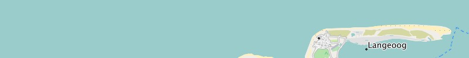
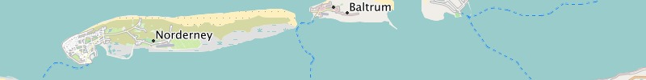
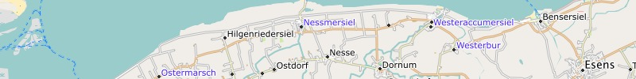
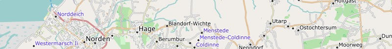

Garmin GPS-device Germany - install image for micro SD card (1.4 GB)
Download
Microsoft Windows: Germany - installation program for Garmin BaseCamp (1.4 GB)
Download
Apple Mac OS X: Germany - installation archive for Garmin BaseCamp (1.4 GB)
Download
All operating systems: Germany - image folder for QLandkarte (1.4 GB)
DownloadWe wish you lots of fun with the Freizeitkarte maps ... and many interesting trips.